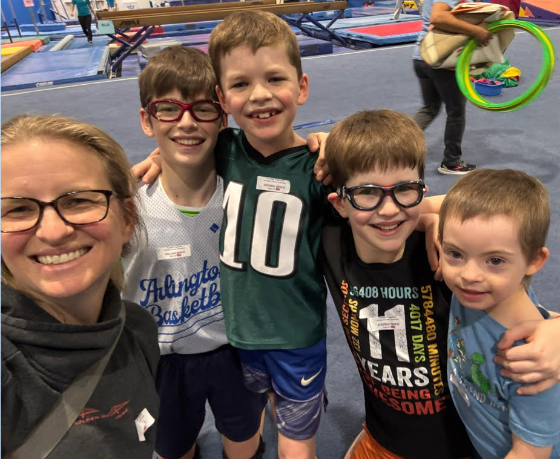

“
This is his favorite family event. All of his brothers come, and our family gets a rare night where each kid is challenged, engaged, and entertained.

Emily RemusPediatrician · Gabriel’s Mom

“The volunteers know Gabriel. They provide supports so our family gets a break from being the ones who provide his accommodations.”
Emily RemusPediatrician · Gabriel’s Mom

“
There are not other programs with adaptive programming. Our kids would just be left out.
Emily RemusPediatrician · Gabriel’s Mom

“Gymnastics helps Gabriel improve his core strength and balance — especially important for kids like him with low tone.”
Emily Remus, MDPediatrician · Gabriel’s Mom

“In times of hardship, our most vulnerable communities shouldn’t be the ones who lose the most.”
Emily RemusPediatrician · Gabriel’s Mom
“
Behind every line on the budget are people whose stories matter — here are the faces of 4 of them.
Emily Remus, MDPediatrician · Howie Kallum Award Recipient